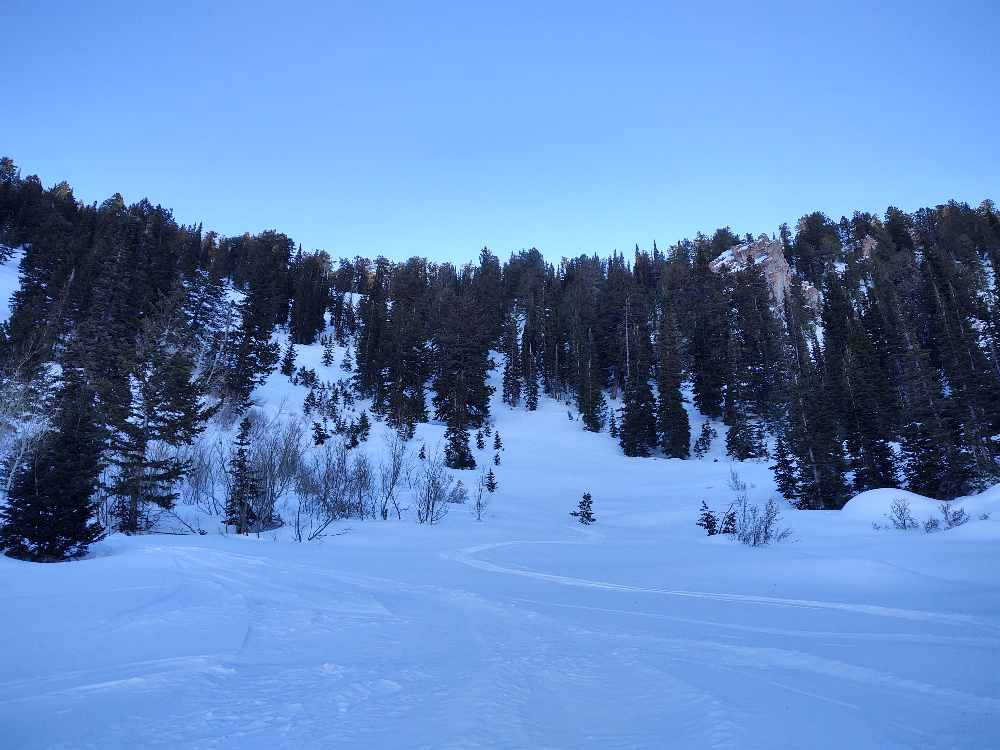

I suppose the Burrow Mine area is part of Bountiful Ridge and is a generally northerly aspect sitting between Black's Peak and Grandview Peak. It's also a lot harder to get to than just the usual stuff on B-Ridge, becuase you've got to go further, and you've got further to go to get out. All this, however, doesn't stop John Mills. If there was a place in the Wasatch owned by someone, I think it would be this place, and if it could talk, it would tell you it was owend by John.
Yeah, John is a machine. He can race up there, do ten laps in the Burrow, ski out, and then still have time to take his family to a ski resort. I think he's got some stories to tell about this place. He may have even told me a few, but I'd get them wrong if I tried to recount them.
The Burrow probably has the best terrain on Bountiful Ridge, and unfortunately, the Powder-Bird Guides know that too. You'll often find their heli markers littering the ridge.
I've skied here quite a few times. There have been some dry spells in some winters that have made it possible to go here with some confidence in the stability of the snowpack. A lesson I learned one day in the mine is that even if the ava-rose is all green, and has been green for several days, that doesn't mean avalanches can't happen. I got knocked off my feet by a sluff, which is technically a dry-loose avalanche. Even if they don't burry you, they can drag you over rocks or rake you through trees.
It's hard to describe just how neat this place is. You just have to see it, and there are a million descent options to explore. I can already picture in my mind my favorite run. I call it "gold strike" in reference to the mine.
A fun exit at the end of the day (which John showed me) is to ski some of the terrain south of Black's Peak on a spur of Bountiful Ridge, head down into a drainage south of the ridge, then ascend the south-facing aspect of Bountiful Ridge to regain it, then ski out to Rudy's Flat. This is a great variation, but be warned that the drainage is a terrain trap. I recall John dislodging a mega-super-huge pin-wheel going down that thing one day, and it was a sign that things weren't too safe over there.
Owen has skied this area quite a bit too. I can tell that both he and John really get the secret of these places, and it's not the powder stash secret. Not that at all. It's something else. It's a type of contentment you can only feel high up in the alpine with the clouds covering the valley below, snow-covered slopes abounding, evergreens thriving, and majestic looking dead trees with more dignety than the live ones, that just doesn't exist anywhere else. You only know about it if you're someone willing and able to get up there. Owen has a fascination with dead trees, and I can see why. It is interesting to ponder just how long they'd been there, and how old they got, and how many seasons they survived.